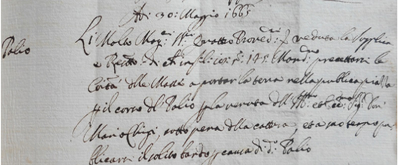

|
|
 |
31 maggio 1665 ?
domenica
NICCHIO
|
- prima di iniziare la lettura, si consiglia di leggere l'introduzione -
Una delibera della Compagnia di San Giovanni Battista in Pantaneto1, una della Conversazione del Casino2, che si fece carico delle spese3 e una successiva della Biccherna del 30 maggio4, ci portano a conoscenza che a breve sarebbe stato disputato un Palio in onore di Mario Chigi, Protettore dell'Onda5, nonché fratello di Papa Alessandro VII.
L'organizzazione di questi festeggiamenti costò al Circolo 698 lire, 4 soldi e 10 denari, comprendenti il paliotto, la guantiera, il ricevimento e tutte le spese accessorie.
Sappiamo che la corsa si svolse fra il 31 maggio (data più probabile) e il 6 giugno e che oltre al Leocorno e all'Onda vi partecipò pure il Bruco che arrivato secondo, si aggiudicò una guantiera6, ossia un elegante vassoio in argento.
Una missiva che la Contrada del Nicchio inviò il 3 luglio 1667 alla Compagnia di S.Stefano, ricordava che i suoi abitanti "...diedero e consegnorno, et in ordine alle passate nostre deliberazioni fatte sotto del dì 4 Luglio 1660 e 1662 come in questo nostro foglio 13 donorno e fecero carità alla Venerabile Compagnia di S.to Stefano delli tre suddetti Pali nelle vettorie passate, e per ultimo il dì 2 Luglio stante..."7.
Tutto questo ci fa intendere che fra il 1663 e il 1666 la Contrada doveva aver conseguito una vittoria, poiché dalla lettera traspare che i Palii vinti dovevano essere quattro: i primi due erano riferiti al 1660 e al 1662; l'ultimo portava la data del 1667, quindi il restante doveva essere per forza collocato fra il 1663 e il 1666.
La convalida di questa tesi ci viene da un verbale dell'Oca, dove si conferma che "il Palio toccho alla Contrada del Nicchio per essere la prima e il premio di una guantiera che i detti SS.ri havevan esposto per la seconda toccho alla Contrada del Bruco"8.
In ogni caso, come avremo modo di leggere, sul numero delle vittorie del Nicchio regna una grande confusione9, tanto che oggi la Contrada non si attribuisce questa vittoria, bensì quella di Cetinale del settembre 1681, che arbitrariamente alcuni storici danno al Valdimontone.

NOTE:
[1] ASS, Patrimonio Resti 769, Compagnia di S.Giovanni Battista in Pantaneto, c. 72v
[2] ACCN, Serie V, c.27, n. 89, 12 maggio 1665
[3] ACCN, Entrate e uscite, c.27v, 6 giugno 1665
[4] ASS, Biccherna 872, 30 maggio 1665, c. 9
[5] ACOn, Libro secondo di deliberazioni 1604-1673, c. 75v
[6] ACOc, Deliberazioni 1646-1666, libro B, c. 188v
[7] ASS, Patrimonio Resti, Compagnia di S.Stefano, cc. 241 e 241v
[8] ACOc, Deliberazioni 1646-1666, libro B, c. 188v
[9] Cfr. Palii del 2 luglio 1676 e 8 giugno 1683

ABBREVIAZIONI BIBLIOGRAFICHE


RIEPILOGO
VITTORIE
DAL 1633
AL 1691

|
|
|